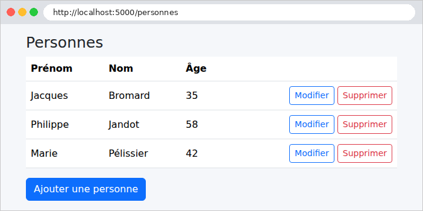
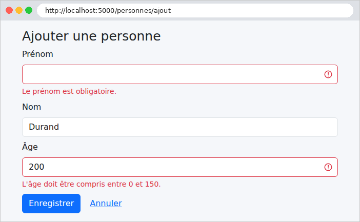
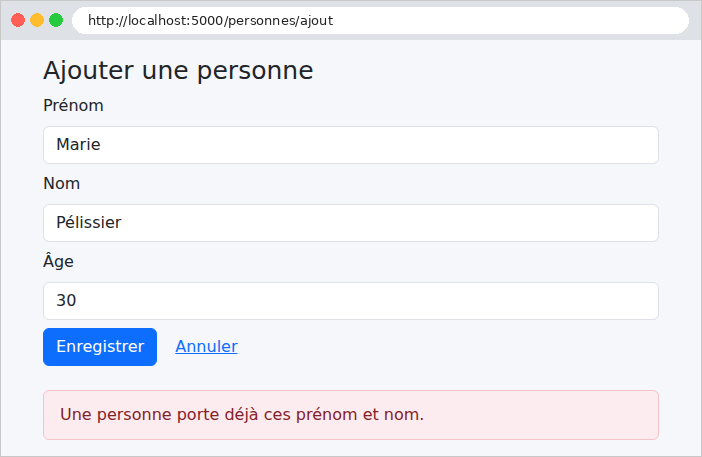
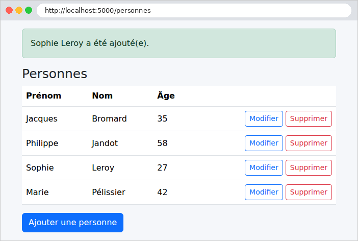
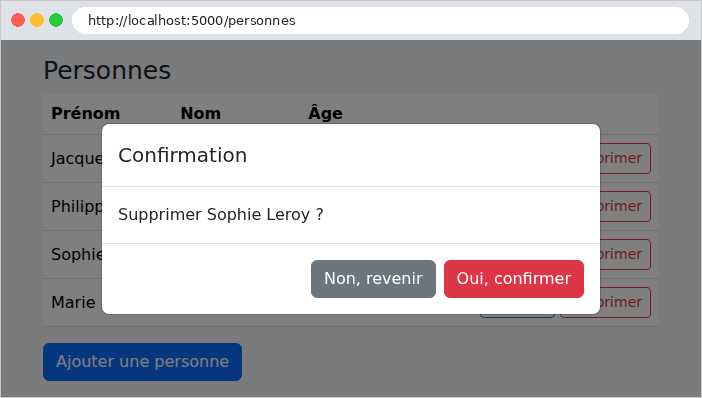
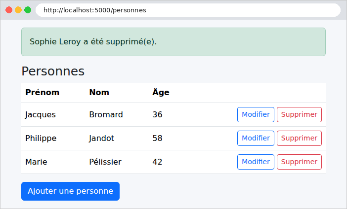

9. Architecture en couches et accès aux données
Les exemples précédents gardaient leurs données en mémoire. Une vraie application les garde dans une base de données, et s'organise en couches (cf. schéma de l'introduction) :
- la couche web (contrôleurs, vues) : lire la requête, appeler la couche métier, choisir la vue ;
- la couche métier : les règles de gestion ;
- la couche DAO ([Data Access Object]) : les requêtes à la base de données.
Chaque couche ne connaît que la couche du dessous, et le moins possible de ses détails : la couche web ignore le SQL, la couche métier ignore le HTML. Cette séparation rend chaque couche plus simple à comprendre, à tester et à faire évoluer. L'exemple 28 l'applique à la gestion d'une liste de personnes : c'est, en plus petit, la gestion des médecins et des clients de l'étude de cas.
En [Java], l'accès à une base de données repose sur plusieurs étages :
- [JDBC] ([Java Database Connectivity]) est l'interface standard de [Java] pour envoyer des ordres SQL à une base. Chaque SGBD fournit un pilote [JDBC] : pour [MySQL], la bibliothèque [mysql-connector-j]. Ouvrir une connexion est coûteux : [Spring Boot] utilise un pool de connexions ([HikariCP]), qui garde quelques connexions ouvertes et les prête aux requêtes ;
- [JPA] ([Jakarta Persistence API]) est la norme [Java] des ORM ([Object-Relational Mapper]) : elle fait correspondre des classes [Java] (les entités) aux tables de la base, et transforme les lignes lues en objets. [JPA] n'est qu'une norme, faite d'interfaces et d'annotations ; l'ORM qui la met en œuvre est ici [Hibernate] ;
- [Spring Data JPA] s'ajoute par-dessus : il suffit de déclarer une interface de DAO, et [Spring Data JPA] en écrit lui-même l'implémentation au démarrage de l'application, y compris les requêtes, qu'il déduit du nom des méthodes.
Le tout est apporté par le starter [spring-boot-starter-data-jpa].
9.1. Exemple 28 : une gestion de personnes en trois couches
9.1.1. La base de données
La base [dbpersonnes] est créée par un script SQL. Avec [Laragon], on l'exécute par exemple dans l'outil [HeidiSQL] (menu Fichier / Exécuter un fichier SQL), ou en ligne de commande, depuis le dossier de l'exemple :
Le fichier [database/dbpersonnes.sql] :
- ligne 3 : le script est écrit en UTF-8 : on l'indique au serveur, pour que les accents des données ([Pélissier]) arrivent intacts ;
- ligne 5 : le jeu de caractères [utf8mb4] accepte tous les caractères (accents, emojis...). La collation [utf8mb4_unicode_ci] compare les chaînes sans tenir compte des majuscules ni des accents : pour [MySQL], [pelissier] et [Pélissier] sont égaux ;
- ligne 11 : un numéro de version, augmenté à chaque modification de la ligne (cf. verrou optimiste, plus bas) ;
- ligne 17 : une contrainte d'unicité nommée : la base refuse deux personnes de mêmes prénom et nom. Son nom servira à reconnaître l'erreur.
9.1.2. La configuration
Le fichier [pom.xml] :
- lignes 20-23 : la validation des données (cf. chapitre 3) ;
- lignes 25-28 : [Spring Data JPA], avec [Hibernate], [HikariCP] et la gestion des transactions de [Spring] ;
- lignes 29-33 : le pilote [JDBC] de [MySQL]. La portée [runtime] indique que le code de l'application ne l'utilise pas directement (il ne connaît que [JPA]) : le pilote n'est nécessaire qu'à l'exécution. Il fonctionne aussi avec [MariaDB].
Le fichier [application.properties] :
- ligne 6 : les messages de succès voyagent en attributs flash (cf. exemple 20), rangés dans la session : le cookie de session suffit à la retrouver, sans que l'identifiant de session soit ajouté aux URL ;
- lignes 9-11 : la connexion à la base, pour la source de données ([DataSource]) que [Spring Boot] fabrique avec [HikariCP] : l'URL [JDBC] (pilote, serveur, port, base), l'utilisateur et le mot de passe. Ce sont les valeurs par défaut de [Laragon] (utilisateur [root], sans mot de passe). Le type de base (et sa version) n'est pas à indiquer : [Hibernate] le demande au serveur à la première connexion, et adapte le SQL qu'il produit ;
- ligne 13 : [Hibernate] sait créer ou modifier les tables d'après les entités ; on le lui interdit ([none]) : la base est créée par le script SQL, et elle est la référence ;
- ligne 15 : par défaut, [Spring Boot] garde la session [JPA] (et sa connexion à la base) ouverte jusqu'à la fin de la fabrication de la vue ([Open Session In View]) : une vue pourrait alors déclencher, sans qu'on le voie, des requêtes SQL. On désactive ce comportement : toutes les lectures sont faites par la couche métier, avant la vue. Quand cette propriété n'est pas précisée, [Spring Boot] le signale au démarrage par un avertissement ([spring.jpa.open-in-view is enabled by default...]) ;
- ligne 17 : [true] affiche dans la console chaque ordre SQL envoyé par [Hibernate] (cf. l'exécution, plus bas).
Le fichier [messages.properties] contient le message d'une erreur de conversion (un âge [abc]), comme à l'exemple 19. La classe [config/WebConfig.java] sert [Bootstrap], comme dans les exemples précédents.
9.1.3. L'entité Personne
Le fichier [entities/Personne.java] :
- ligne 12 : [@Entity] fait de la classe [Personne] une entité [JPA] : chaque ligne de la table sera un objet [Personne]. Les annotations viennent du package [jakarta.persistence] : ce sont celles de la norme [JPA], pas celles d'[Hibernate] ;
- ligne 13 : la table correspondante (par défaut, ce serait [Personne]) ;
- lignes 18-21 : la clé primaire ([@Id]). [@GeneratedValue(strategy = GenerationType.IDENTITY)] indique que sa valeur est attribuée par la base ([AUTO_INCREMENT]) : [Hibernate] relit la valeur attribuée après chaque [INSERT]. Le type [Integer], et non [int], permet la valeur [null] : une personne pas encore enregistrée n'a pas d'identifiant. [@Column] donne le nom de la colonne correspondant à chaque champ ;
- lignes 25-27 : la colonne de version. [@Version] confie à [Hibernate] le verrou optimiste : il met la version à 0 lors de l'[INSERT], l'augmente de 1 à chaque [UPDATE], et ajoute à chaque [UPDATE] (et à chaque [DELETE]) la condition [AND version = <valeur lue>]. Nous verrons plus loin à quoi cela sert ;
- lignes 29-36 : les autres colonnes. [length] indique la taille de la colonne : elle ne servirait que si [Hibernate] créait lui-même la table, ce qui n'est pas le cas ici (cf. [ddl-auto]) ;
- lignes 39-40 : [JPA] exige un constructeur sans paramètre : c'est lui qu'[Hibernate] utilise pour fabriquer un objet à partir d'une ligne lue, avant de remplir ses champs ;
- lignes 48-59 : les accesseurs (méthodes [getX] et [setX]) : l'entité est un JavaBean. Il n'y a pas de [setId] ni de [setVersion] : ces deux valeurs ne sont écrites que par [Hibernate], qui accède directement aux champs.
9.1.4. La couche DAO
Le fichier [dao/PersonnesDao.java] :
C'est toute la couche DAO : une interface, sans une ligne de code exécutable.
- ligne 13 : l'interface hérite de [JpaRepository<Personne, Integer>] (une entité [Personne], dont la clé est un [Integer]). Au démarrage, [Spring Data JPA] fabrique une classe qui implémente cette interface, et en fait un bean, que l'on reçoit par injection. [JpaRepository] apporte déjà les méthodes usuelles : [findById] (lire par la clé, résultat dans un [Optional]), [findAll], [save] ([INSERT] ou [UPDATE]), [saveAndFlush], [deleteById], [count]... ;
- ligne 17 : une requête dérivée : [Spring Data JPA] analyse le nom de la méthode et en déduit la requête. [findAll] : toutes les personnes ; [By] : sans condition, puisque rien ne suit ; [OrderByNomAscPrenomAsc] : triées par nom, puis par prénom, dans l'ordre croissant ;
- ligne 21 : [findFirst] : la première personne trouvée ([LIMIT 1]), ou un [Optional] vide ; [ByPrenomAndNomAndIdNot] : dont le prénom et le nom sont ceux donnés en paramètres, et l'identifiant différent du troisième paramètre. C'est utile à la modification d'une fiche, qui ne doit pas se trouver en conflit avec elle-même. La comparaison est faite par [MySQL], donc selon la collation de la base : sans tenir compte des majuscules ni des accents.
Une faute dans le nom d'une méthode ([findAllByOrderByNomm]) est détectée au démarrage : l'application refuse de démarrer, en indiquant la propriété inconnue. Une requête trop complexe pour un nom de méthode s'écrit dans le langage [JPQL] ([Jakarta Persistence Query Language], un SQL qui porte sur les entités et leurs champs plutôt que sur les tables), dans une annotation [@Query] : l'étude de cas en utilise quelques-unes.
9.1.5. La couche métier
Le fichier [metier/MetierException.java] :
Une [MetierException] signale qu'une règle de gestion refuse une opération. Ce n'est pas une anomalie du programme : son message est destiné à l'utilisateur. Elle hérite de [RuntimeException] : c'est une exception non vérifiée, qu'une méthode peut lever sans la déclarer ([throws]). Nous allons voir que ce choix compte aussi pour les transactions.
Le fichier [metier/DonneesPersonne.java] :
Les données d'une personne, telles que la couche web les transmet : la couche métier ne connaît pas la classe du formulaire.
Le fichier [metier/PersonnesMetier.java] :
Commentons ce code :
- ligne 18 : la couche métier est un bean de type service ;
- ligne 19 : [@Transactional], posée sur la classe, s'applique à chacune de ses méthodes publiques : la méthode s'exécute dans une transaction, ouverte ([START TRANSACTION]) avant son appel, validée ([COMMIT]) à son retour, annulée ([ROLLBACK]) si elle lève une exception non vérifiée. Comme pour [@PreAuthorize] (exemple 26), [Spring] enveloppe le bean dans un proxy, qui ouvre et ferme la transaction autour de l'appel. Tout ce que fait la méthode, y compris les appels au DAO, se passe dans la même transaction et sur la même connexion ;
- lignes 32-35 : [readOnly = true] : une transaction en lecture seule, qui dispense [Hibernate] de rechercher, à la fin, les entités modifiées ;
- lignes 37-40 : une personne absente est une [MetierException]. [orElseThrow] rend le contenu de l'[Optional], ou lève l'exception fabriquée par la lambda s'il est vide ;
- lignes 42-48 : l'ajout. Règle : pas deux personnes de mêmes prénom et nom. On la vérifie avant l'écriture pour donner un message clair. Aucune personne n'a l'identifiant 0 : [IdNot] ne retire ici personne de la recherche ;
- lignes 50-64 : la modification. Règle supplémentaire, le verrou optimiste (lignes 53-55) : le formulaire de modification a transporté la version de la fiche telle qu'elle était à l'ouverture du formulaire. Si elle a changé entre-temps (un autre utilisateur a modifié la même fiche), on refuse, plutôt que d'écraser silencieusement son travail. [Objects.equals] compare deux [Integer] en acceptant [null] ;
- ligne 51 : l'appel de [lire] est un appel interne à la classe : il ne passe pas par le proxy, et son [readOnly] ne s'applique pas. [lire] s'exécute simplement dans la transaction de [modifier] ;
- lignes 60-63 : l'entité lue dans la transaction est suivie par [Hibernate] (on dit qu'elle est « gérée ») : il suffit de modifier ses champs, [Hibernate] détecte les changements et produit un [UPDATE] des colonnes de la table ;
- lignes 66-70 : la suppression. La personne est lue d'abord : pour vérifier qu'elle existe, et pour que le contrôleur puisse citer son nom ;
- lignes 74-87 : l'enregistrement. Normalement, [Hibernate] n'envoie les [INSERT] et [UPDATE] à la base qu'à la fin de la transaction, au [COMMIT], donc après la sortie de la méthode : une erreur de la base ne pourrait plus être interceptée ici. [saveAndFlush] enregistre l'entité et envoie tout de suite ([flush]) les ordres SQL en attente ;
- lignes 77-79 : la vérification de la version, plus haut, ne suffit pas toujours : deux utilisateurs peuvent enregistrer la même fiche au même instant, et passer tous deux la vérification. L'[UPDATE ... WHERE id = ? AND version = ?] du second ne modifie alors aucune ligne ; [Hibernate] s'en aperçoit, et [Spring] lève une [ObjectOptimisticLockingFailureException], qui devient la même [MetierException] ;
- lignes 80-85 : de même, deux ajouts simultanés de la même personne passent la vérification des homonymes, mais la contrainte d'unicité de la base, elle, ne laisse rien passer. [Spring] traduit les exceptions des différentes bases et des différents ORM en une hiérarchie d'exceptions qui leur est commune : une violation de contrainte devient une [DataIntegrityViolationException]. [getMostSpecificCause()] rend l'exception d'origine, celle du pilote [MySQL], dont le message cite le nom de la contrainte ([Duplicate entry '...' for key 'unq_personnes_prenom_nom']). Une autre violation de contrainte poursuit son chemin (ligne 85) : c'est une anomalie.
Dans tous les cas où une exception quitte une méthode de [PersonnesMetier] (une [MetierException] comprise, puisqu'elle hérite de [RuntimeException]), le proxy annule la transaction : rien de ce qu'a fait la méthode n'est conservé. Attention : par défaut, une exception vérifiée (qui hérite d'[Exception] sans hériter de [RuntimeException]) ne provoque pas d'annulation.
Nous avons vérifié ce dernier cas en envoyant 30 requêtes d'ajout de la même personne au même instant : une seule a été acceptée ; pour d'autres, la base a refusé l'[INSERT] (erreur [MySQL] n° 1062, que [Hibernate] signale dans la console par un avertissement [HHH000247]), et l'utilisateur a reçu le message des homonymes, pas une erreur 500.
9.1.6. La couche web
Le fichier [models/FormulairePersonne.java] :
Le formulaire et ses contraintes de validation (cf. exemple 19), avec la version de la fiche (ligne 26), transportée par un champ caché. L'âge est un [Integer] et non un [int] : un champ vide donne [null], que [@NotNull] signale.
Le fichier [controllers/PersonnesController.java] :
1 2 3 4 5 6 7 8 9 10 11 12 13 14 15 16 17 18 19 20 21 22 23 24 25 26 27 28 29 30 31 32 33 34 35 36 37 38 39 40 41 42 43 44 45 46 47 48 49 50 51 52 53 54 55 56 57 58 59 60 61 62 63 64 65 66 67 68 69 70 71 72 73 74 75 76 77 78 79 80 81 82 83 84 85 86 87 88 89 90 91 92 93 94 95 96 97 98 99 100 101 102 103 104 105 106 107 108 109 110 111 112 113 114 115 116 117 118 119 120 121 122 123 | |
Commentons ce code :
- lignes 26-30 : le contrôleur ne connaît que la couche métier ;
- lignes 33-36 : les chaînes reçues sont débarrassées de leurs espaces de début et de fin, et une chaîne vide devient [null] (cf. exemple 19) ;
- lignes 38-41 : la racine du site redirige vers la liste ;
- lignes 54-68 : l'ajout, en trois temps : validation du formulaire (erreurs : réaffichage), appel de la couche métier (succès : message flash et redirection, cf. exemple 20), [MetierException] (réaffichage avec le message en bas de page). Une autre exception n'est pas interceptée : c'est une anomalie, qui produira une erreur 500 ;
- ligne 70 : [{id:\\d+}] : une variable de chemin contrainte par une expression régulière (cf. exemple 02) : [\d+] désigne une suite de chiffres (la barre oblique inverse est doublée dans une chaîne [Java]). [/personnes/abc/modification] ne correspond à aucune action : erreur 404 ;
- lignes 70-84 : le formulaire de modification, prérempli avec la fiche lue en base, y compris sa version ;
- lignes 86-101 : même schéma que l'ajout ; la version renvoyée par le formulaire est transmise à la couche métier ;
- lignes 103-113 : la suppression. Il n'y a pas de formulaire à réafficher : une éventuelle erreur voyage, elle aussi, en attribut flash ;
- lignes 116-122 : le modèle de la vue du formulaire, qui sert à l'ajout et à la modification : titre et adresse d'envoi différents, valeurs du formulaire, erreur de la couche métier.
Le fichier [templates/personnes/formulaire.html] :
- ligne 6 : [th:object] désigne l'objet du formulaire ; [th:action] reçoit l'adresse d'envoi fournie par le contrôleur ;
- ligne 8 : le champ caché qui transporte la version de la fiche : [th:field="*{version}"] fabrique ses attributs [name] et [value] (cf. exemple 19) ;
- lignes 9-11 : les trois champs, fabriqués par le fragment [champ] de l'exemple 19.
Le fichier [templates/layout.html] :
- ligne 12 : le message de succès, en haut de la page ;
- ligne 15 : le message d'erreur, en bas de page : celui de la requête en cours (placé dans le modèle par [formulaire]), ou celui déposé en attribut flash avant une redirection. Dans les deux cas, c'est un attribut [erreur] du modèle de la vue ;
- lignes 17-18 : la fenêtre de confirmation et son script (cf. exemple 21).
La vue [personnes/liste.html] a la structure de la liste des contacts de l'exemple 21 : pour chaque personne, un lien vers le formulaire de modification et un formulaire POST de suppression, dont l'envoi est confirmé. Le fragment [fragments/champ.html] est celui de l'exemple 19, la fenêtre [fragments/confirmation.html] et le script [static/js/app.js] ceux de l'exemple 21, sans changement.
9.1.7. Exécution
Si les valeurs de [application.properties] ne conviennent pas (un mot de passe pour [root], par exemple), on peut les remplacer sans modifier le fichier, par des variables d'environnement : le nom de la propriété s'écrit en majuscules, les points devenant des caractères de soulignement. Sous [Windows] ([PowerShell]) :
Au démarrage, avec [MariaDB], [Hibernate] affiche un avertissement :
Il est sans conséquence : [MariaDB] se présente au pilote [MySQL] avec un numéro de version « 5.5.5 », qu'[Hibernate] prend pour un très vieux [MySQL]. Avec [MySQL] 8, il n'apparaît pas.
La liste, à l'URL http://localhost:5000/ :

Un formulaire invalide :

Un homonyme : la règle métier le détecte. [MySQL] comparant selon la collation de la base, [marie pelissier], écrit en minuscules et sans accent, est lui aussi refusé. Ici, la saisie [Marie Pélissier] :

Un ajout réussi :

Avec [spring.jpa.show-sql=true] dans [application.properties] (ou, sans modifier le fichier, [../mvnw spring-boot:run -Dspring-boot.run.arguments=--spring.jpa.show-sql=true]), la console montre chaque ordre SQL envoyé par [Hibernate]. Pour l'ajout d'une personne, puis l'affichage de la liste qui suit la redirection :
On y reconnaît la recherche d'homonyme (la requête déduite du nom [findFirstByPrenomAndNomAndIdNot]), l'[INSERT], puis la lecture de la liste ([findAllByOrderByNomAscPrenomAsc]). Les valeurs sont transmises à part, en paramètres (les [?]) : c'est ce qui protège des injections SQL. Les ordres de transaction ([START TRANSACTION], [COMMIT]) ne sont pas affichés. Pour la modification d'une fiche :
L'[UPDATE] écrit la nouvelle version et vérifie l'ancienne ([where id=? and version=?]) : c'est le verrou optimiste. Et pour une suppression :
[deleteById] n'a pas relu la personne : elle était déjà suivie dans la transaction, depuis l'appel de [lire].
Le verrou optimiste : deux formulaires sont ouverts sur la même fiche ; le premier est enregistré (la version passe de 0 à 1) ; le second, qui transporte encore la version 0, est refusé :
La suppression, avec confirmation :

